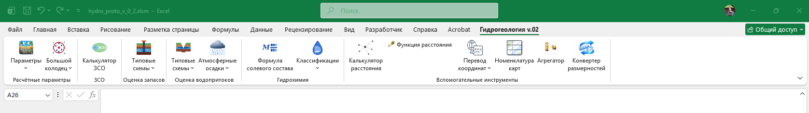

Шесть функциональных групп в одной вкладке Excel — единая точка входа во все расчётные функции прямо из привычного интерфейса. Без поиска формул: пользователь выбирает функцию по названию параметра, мастер аргументов сам подставит синтаксис.

Вкладка «Гидрогеология v.02»: Расчётные параметры · ЗСО · Оценка запасов · Оценка водопритоков · Гидрохимия · Вспомогательные инструменты
Каждая группа — самостоятельный расчётный блок. Выбор пункта меню вставляет функцию в активную ячейку и открывает мастер аргументов с подсказками по ошибкам.
Более 15 параметров одним кликом — без поиска формул и синтаксиса.
24 типовые гидродинамические схемы — от изолированного пласта до кругового контура.
Та же логика — для карьеров, котлованов и горных выработок.
Калькулятор границ ЗСО водозабора с наглядной схемой.
Оценка химического состава и типа подземных вод.
Полезно не только гидрогеологам.
Подключите файл Cenozoic HydroCore (xlam) в Excel — как обычную надстройку, без дополнительного ПО.
На ленте появляется отдельная вкладка с шестью группами функций, разложенными по задачам.
Меню подписано по смыслу параметра — не нужно вспоминать синтаксис формул.
Диалог аргументов подставит формулу в ячейку и подскажет, если данные некорректны.
Покажем, как выбранная схема работает на реальных данных вашего объекта.